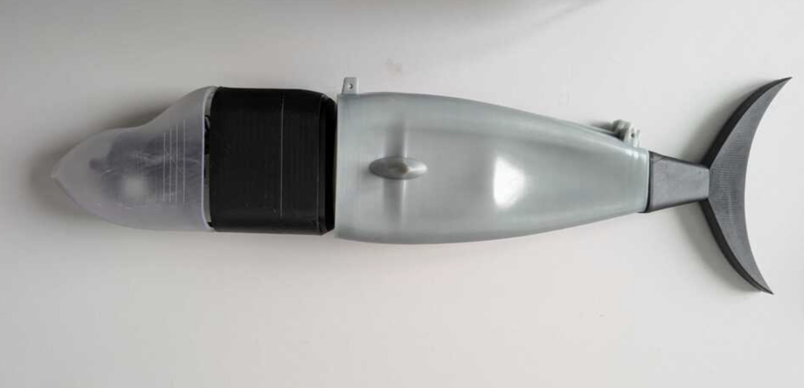
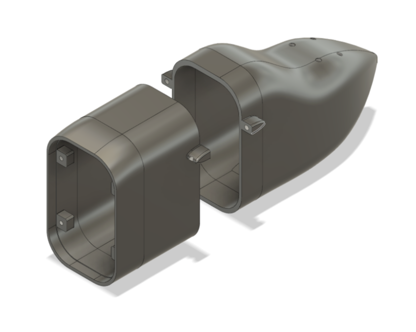
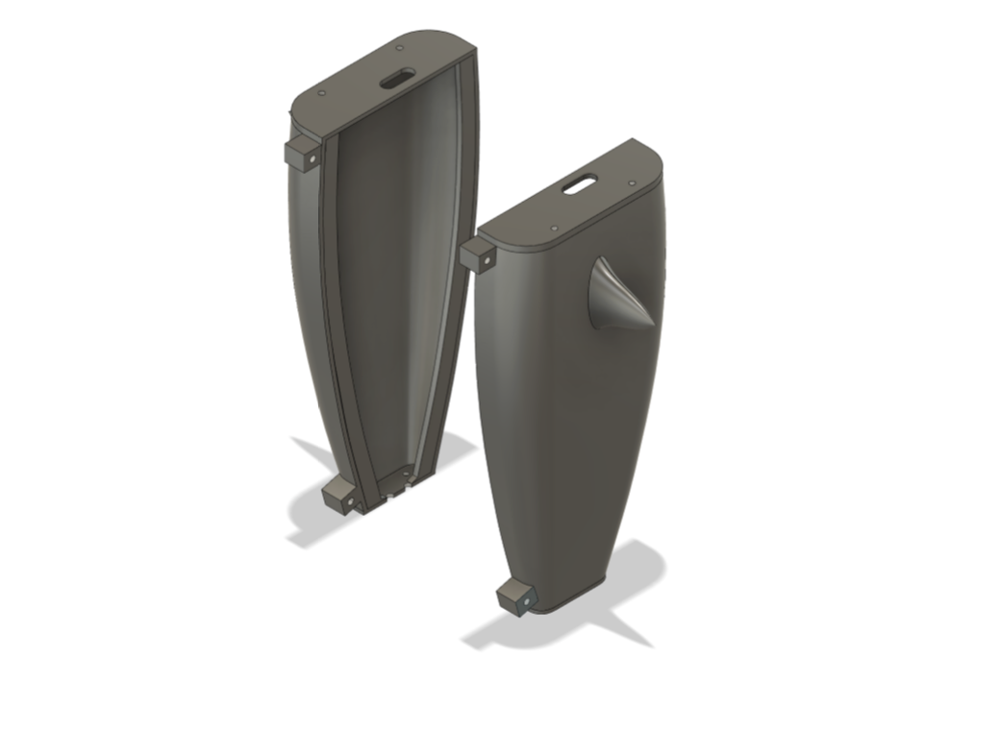
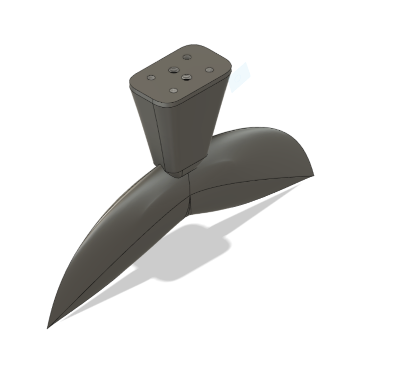

Robotic fish powered by redox flow batteries represent a novel solution for sustainable underwater missions, enabling longer and more efficient operations. A key challenge, however, is creating a reliable system to manage the intake and discharge of liquid electrolytes. This project aims to develop a specialized refueling module for these robotic fish. The system features a single motor-driven pump, managed by an Arduino microcontroller, to accurately control liquid fuel transfer. It is designed to be buoyant, modular for easy attachment, and manufactured using lightweight, customizable 3D printing.


